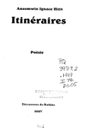
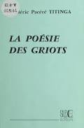
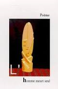

Acceuil
Historique
Auteurs
Romancier
Poètes
Nouvelliste et essayistes
Livres
Romans
Reccueil de poèmes
Nouvelles et essais
Maison d'éditions
Ouagadougou
Bobo-Dioulasso
Voici une liste des principaux recueil de poèmes.
Iténaires de Ignace HIEN
Écrivain romancier et nouvelliste, Ansomwin Ignace Hien a voulu cette fois-ci diversifier le genre littéraire car dit-il, "on ne peut atteindre tout le monde avec un seul genre". "Itinéraires" est donc tourné vers la poésie, un recueil de poèmes de quatre vingt trois pages édité aux Editions Les Découvertes du Burkina Faso de Jacques Guingané et tirée à 1 000 exemplaires. Pour l’éditeur, Jacques Guingané, "Itinéraires", est une poésie de sagesse d’une grande qualité littéraire. Pour l’auteur, cet ouvrage se veut un guide spirituel par lequel le lecteur peut avoir un comportement positif. La thématique du livre a trait à la déchéance morale que connaît notre monde : " A l’aube de ce troisième millénaire, le monde a atteint un degré de déchéance jamais égalée. Les graves et nombreuses maladies épidémiques ou incurables, les cataclysmes naturels, les crashes d’avions, les guerres, la famine... sont devenus des événements quotidiens à travers le globe. Tous les vices, comme longtemps en couvaison, se sont retrouvés tout d’un coup dans des conditions on ne peut plus propices pour la germination". Pour l’auteur, l’humanité dans son profond désarroi, a perdu ses repères spirituels. Des titres comme "Itinéraires" est alors interpellatif. L’ouvrage "Itinéraires" assemble des poèmes en versification libre, saupoudrés d’une once de rime classique. Les textes sont regroupés en deux livres, par affinités structurelles. Le premier livre comporte des poèmes de construction régulière, tandis que le second est un mélange savoureux de textes de structure multiforme.
Ecrit en 2005

Poésies des griots de Frédéric Titinga PACERE
Poésies des griots est un recueil de poèmes ancestraux. Son auteur, Maitre PACERE est allé au près des aniens de quelques localités biens choisies afin de mettre sur pied ce beau joyau. Plongé dans la lecture de ces pèmes, nous remontons le temps mais pas que, puisse que l'espace est lui aussi remonté. Nous vous le conseillons vivement!!!
Ecrit en 1982

L'homme meurt seul de Frédéric Titinga PACERE
Recueil très complet de poèmes sur des reflexions anthrpologiques. La finaliité de l'homme, son écosystème et son impact sur la nature, tels sont les thèmes abordés.
Ecrit en 2007

Les livres les plus populaires